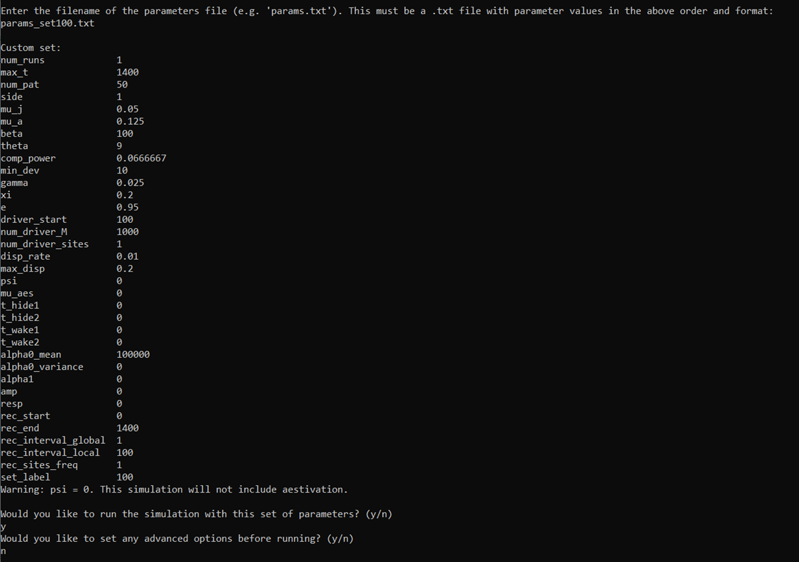
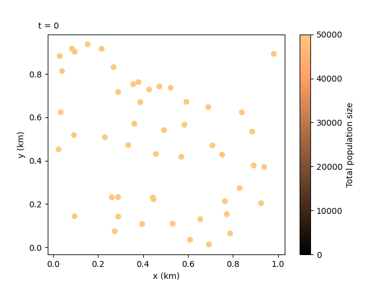

2. Running a custom set#
This tutorial will describe how to run the model with a custom set of parameters, take a closer look at some of the recording parameters and create an animation from the local output data.
2.1 Run with custom parameters#
We will now run the program with a set of custom parameters carefully selected to make an interesting animation.
Run the executable and enter the custom option number 100. This will display the list of parameters needed.
You will need to create a text file with the parameters, listed in the same order as above.
For this example, you can include the following parameters. You can copy these into a file in the build directory or we can use the relative filepath to the params_set100.txt file in the GitHub docs/exercises directory. Let’s try the latter - we can directly use the files we cloned from the repository.

docs/exercises/params_set100.txt#
Note
The green labels are illustrative and should not be included in the file. The values should be delimited by new lines.
Parameters
1
1400
50
1
0.05
0.125
100
9
0.0666666666666666
10
0.025
0.2
0.95
100
1000
1
0.01
0.2
0
0
0
0
0
0
100000
0
0
0
0
0
1400
1
100
1
100
Let’s have a look at the recording parameters at the end:
rec_start: the time (i.e. simulation day number) to start recordingrec_end: the time to stop recordingrec_interval_global: the number of days to skip between datapoints in the global filerec_interval_local: the same as above but for the local filerec_sites_freq: the number of sites to skip between datapoints on each recorded day. Applies to the local data and the coordinates files. e.g. ifrec_sites_freq= 2 andnum_pat= 10, only the datapoints from sites 1, 3, 5, 7 and 9 would be written into the local file each day.set_label: the number given to the output filenames, in the formatTotals{set_label}run1.txt. Our filenames will now end in “100” to distinguish them from our Tutorial 1 run.
rec_end and rec_interval_local will be particularly useful in making the following animation. Notice how the rec_end we have chosen matches max_t so we can later display the full run.
We can now proceed with the program and enter the parameter filepath. We will use the relative filepath ../docs/exercises/params_set100.txt, which will be relative to the build directory. The first ../ means we are going up a directory from our current directory build.
The interface will then confirm that we are happy with the parameters read in and finally, we will be asked if we want to choose advanced options - we will look at these later, so we can say no for this run.
The program should now start running in the same way as the pre-defined set run.
2.2 Creating a local data animation: population size (optional - python)#
Note
This tutorial will require the same installations as Tutorial 1.2 Simple plots: coordinates and totals (optional - python).
Now that we have our output files for the custom run, we can do something even more exciting. We can combine the local data and the coordinates files to create an animation showing how the population sizes evolve over time and space. We can use the following script:
Script
import numpy as np
import matplotlib.pyplot as plt
import matplotlib.animation as animation
import matplotlib.colors as mcolors
fig, ax = plt.subplots()
# get coords of sites
coords = np.loadtxt("CoordinateList100run1.txt", skiprows=2)
x = coords[:, 1]
y = coords[:, 2]
# get populations
local_data = np.loadtxt("LocalData100run1.txt", skiprows=2)
# get populations on one day
t=0 # recorded timestep
sim_day = int(local_data[t*len(x), 0])
local_data_day0 = local_data[t*len(x):((t+1)*len(x)), 2:8]
# - - - - -
# calculate total population for all genotypes in each patch
tot_pops = np.zeros(len(x))
for pat in range(0, len(x)):
patch_data = local_data_day0[pat, :]
for i in range(0, len(patch_data)):
tot_pops[pat] += patch_data[i]
# find maximum and minimum population values in whole simulation for colour map bounds
max_pop = np.amax(local_data)
min_pop = np.amin(local_data)
# make a scatter plot with population size colour map
scat = ax.scatter(x, y, c=tot_pops, cmap='copper', vmin=min_pop, vmax=max_pop, marker='o')
cbar = fig.colorbar(scat, ax=ax, label='Total population size')
# - - - - -
annotation = fig.text(x=0.1, y=0.9, s='t = {}'.format(sim_day))
ax.set_xlabel("x (km)")
ax.set_ylabel("y (km)")
side = 1 # modify manually depending on selected side parameter
ax.set_xlim(0, side)
ax.set_ylim(0, side)
def update(t):
sim_day = int(local_data[t*len(x), 0])
local_data_day = local_data[t*len(x):((t+1)*len(x)), 2:8]
# ~ ~ ~ ~ ~
# calculate total population for all genotypes in each patch
tot_pops = np.zeros(len(x))
for pat in range(0, len(x)):
patch_data = local_data_day[pat, :]
for i in range(0, len(patch_data)):
tot_pops[pat] += patch_data[i]
scat.set_array(tot_pops) # update the scatter point colours according to new tot_pops
# ~ ~ ~ ~ ~
annotation.set_text("t = {}".format(sim_day))
return scat
# calculate number of frames in animation
rec_sites_freq = 1
num_frames = int(len(local_data[:, 0]) / (len(x) / rec_sites_freq))
anim = animation.FuncAnimation(fig=fig, func=update, frames=num_frames, interval=1000)
anim.save("set100_pop_anim.gif")
plt.show()
We won’t get into the details of the python code since this is an optional vignette and there is plenty of documentation in the matplotlib website. However, notice the calculation at the end of the script for the number of frames in the animation. We have provided a simple way to calculate this by manually entering the value of rec_sites_freq we used in our run.
This should produce the following animation:
{kind=link}
Tip
Depending on the IDE you are using, animations may not be displayed correctly in inline plot settings, so make sure to change the graphics view settings. The anim.save() command should have also saved a copy of the animation as a .gif file in your current directory.
We can see the animation flows well at 100-day jumps, but it could be re-run with a smaller rec_interval_local if we want smoother changes. We could also start recording at a later rec_start closer to the release of the gene drive, or even include less sites in the animation with rec_sites_freq so the plot looks less cluttered.